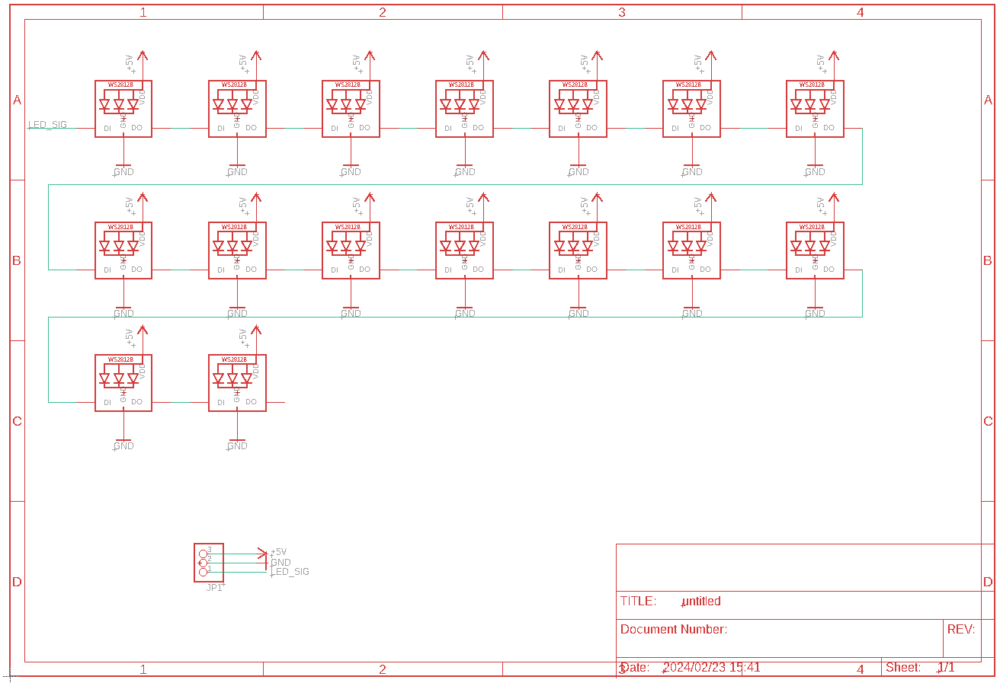
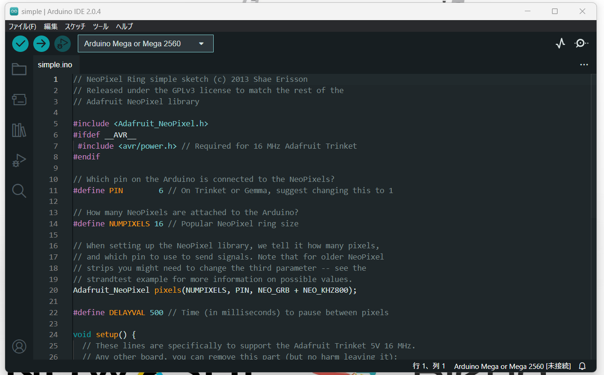

NeoPixel制御指南

超お久しぶりです。
最近は受験生なもので、全然したいことができてないわけなんですが、
NeoPixelを乗っけたロボットを全国大会に持っていったら案外興味を持ってくれました。
主に興味を持ってくれた人たち
- FTomo@ftomo
- Yuta@yuta_ciao
- 会場にいたたくさんのロボカッパーさんたち
ありがとうございます
てなわけで。始めましょうか。
ひかるんばっていわれたんですけど、Root41の固有名詞ですよね…？
まあ個人的にはずっと実装したかったので、うれしいです。
今回協力していただいた方々
このNeoPixelの回路、プログラムの参考にした方、およびサイトを掲載させていただきます。
協力していただいた方々
-
@JLCPCB
スポンサーについていただいている海外企業様です。
NeoPixelの基板の発注をお願いいたしました。 -
次世代ロボットエンジニア支援機構 Scramble
実験にあたり、支援していただいた、ブレッドボードを使用させていただいております。
ご支援、ありがとうございます。 -
しろくま胡瓜@shirokuma89dev
今回、回路のミスがないかを見ていただきました。
にしても、サタデープログラムで会うなんて奇遇ですね…
参考にしたサイト
本当に、ありがとうございます。
この記事を見るうえでの前提
この記事では、以下のことについては解説しません。
- Arduinoの概要・および操作
念のため環境をば
環境
項目 | - -|- OS | Windows 11 Home 23H2 マイコン | Arduino MEGA 2560 (ELEGOO) IDE | Arduino IDE 2.0.4 ライブラリ名 | バージョン -|- Adafruit NeoPixel | 1.12.0今回はWS2812Bを使用します。
使用する物によって電圧が変化する場合がありますので、必ずデータシートを見てください。
また、今回使用したデータ（以下参照）を公開します。 公開するデータ
- 基板データ(Eagle)
- BOM, CPL
- 今回使用するプログラム
です。
CoffeeMilk-RCJ/NeoPixel - GitHub
ライセンスは、CC BY-NC-ND 4.0です。
現在、まだ追加完了していません
なんでそんなのつけるねん
言いたいことはわかります。
理由は、デバッグのためです。
以下の動画を見てください。
こちらの動画では、コンパスの向きを表しています。
ロボカッパーの皆様なら一度は体験したことある、コンパス狂いです。 急に相手のほう向かれても困りますよね。でも、一発でわからないじゃないですか。なので実装しました。
また、ライトウェイトでは、有名な話ですが、白線を超えてはいけません。
その時に、全体の色を変えるように変更したりすることもできます。
具体的には以下のような感じです（実演）
※音声を0にしてみてください#今日の進捗 その1
— そら @WSL027 (@sora81dev) March 22, 2024
・起動のアニメーション
・コンパスの位置を光で表す
・ラインの時の処理 pic.twitter.com/HXSUUsmHEu
また、色の自由度が高いです。
もし、色付きLEDで、ルールに違反する色だった場合、外すか、プログラム上から消すしかありません。
しかし、NeoPixelは後から色を変更できます。
え？フルカラーLEDでいいって？
それは次の章でわかります。
NeoPixelの概要
概要についてですが、NeoPixelという部品。ご存知でしょうか？
こちらはマイコン付きLEDみたいなものでして、自由に色を指定出来ちゃいます。
そしてそして！ここが超魅力でして、通信ケーブルが電源（2本）+通信用（1本）のみなんですよね。個数制限？そんなのは存在しません。
追記✎
個数制限がないといいましたが、それ相応の電源は必要になります。
なので、無限ではありません。
しかしながら、ロボカップで使用するぐらいなら十分すぎるぐらいだと思います。
こんな簡単なのに超簡単に制御できちゃうって本当？
はい。もちろん本当です。
では、さっそく、回路の設計から行きましょう。
NeoPixelの回路
これがですね、超簡単なんです。
みてください。これだけです。

信じられますか？
マジでこんだけです。
今回の回路の発注は、JLCPCBさんに依頼しました。
本当にありがとうございました。
発注した基盤はこれです

現在、画像用意中です。
それにPLAで3Dプリントしたカバーをつけてます。
では、解説行きます。 まず、あたりまえですが、電源が必要になります。 3.3Vですね。 それをNeoPixelのVCCとGNDにつなげてあげてください。 そして、PWM対応のデジタルピンをD-inにつなげてください。 これが1個めのつなげ方です。
2個目以降は電源をつなげて、1個めのD-outを2個めのD-inにつなげるだけです。
つまり、前のD-inを次のD-outにつなげてあげるだけです。
最後のD-outは繋げてはいけません。(気になるならGNDに落とすかぐらいです)
NeoPixelの制御
さて、本題に入りましょうか。
まずは見てみましょう。百聞は一見に如かずです。
これが必要最低限のプログラムです。
順に解説していきます。
まずは定義(define)から。
| 名称 | 意味 |
|---|---|
| PIN | NeoPixelを刺しているピン |
| NUM_PIXELS | NeoPixelの数 |
※PWM対応のデジタルピンにNeoPixelを刺してください。
では、いよいよ光らせ方です。
pixels.clear() で全部消そう
これは基本です。これを入れないと消えないです。
とりあえず脳死で最初に入れときましょう。
pixels.setBrightness() で光の強さを決めよう
Brightness、日本語で光の強さという意味です。
光の強さによっては目を傷めたり、ルールに違反する恐れがあるのでほどほどに。
pixels.setPixelColor() でどこをどんな色に光らせるかを決めよう
この中には2つの値を入れる必要があります。
- 光らせる位置
- 色
光らせる位置は普通に数字(int)で指定すればいいです。 色は少しだけ面倒で、pixels.Color(R, G, B) にRGBを突っ込んでやればうまい事光ってくれます。
…長々と書きましたが、めんどいですよね
サンプル使っちゃいましょう！！！！！
使えるものは使っちゃおう！の精神で行った方が気楽ですよ。
では早速。
ファイル＞スケッチ例＞Adafruit NeoPixel
たくさんありますね～
(無かったら、ライブラリインスコしてあげてください。)
さっそく、Simpleを選んでみてください。
このような画面が出てくると思います。

あとは先ほどと同じように、
PINにNeoPixelの刺さっているピン。（PWM対応）
NUMPIXELSにつなげているNeoPixelの数を入れてあげてください。
そうするとうまい事行くはずです。
実演するとこのようになります。 ※プログラムはbuttoncyclerを使用しています。
#NeoPixel
— そら @WSL027 (@sora81dev) March 21, 2024
治りました！
良かったです！
ちなみに治った原因は不明！
Program : [Sample] buttoncycler
Shot on SONY IXY 510 is
1280x720 30fps https://t.co/g20jIjjahw pic.twitter.com/XxVzQQHW8a
バグるときは
私自身も、なぜかバグるという現象が発生しました。それに対しての対応を見ていきましょう。
なんか変な色がついたりするんだけど？
NeoPixelはノイズに弱いです。
はんだ付けがうまい事言っているか、見てあげてください。
うまく光らない！
おそらく、電流もしくは電圧が足りていないのでしょう。
NeoPixelは、3.3Vの電圧を要します。
また、個数が増えれば増えるほど、たくさん電流が必要になります。
電源を見直してみましょう。
それでも動かん！
DMしてみてください。できる限り対応します。 Twitter
Comments